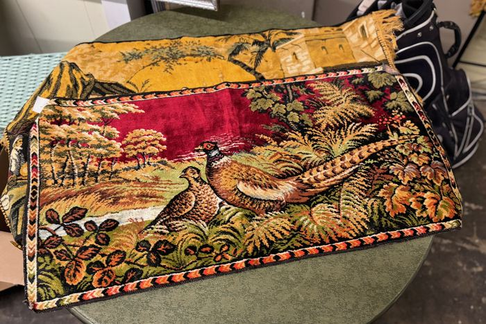
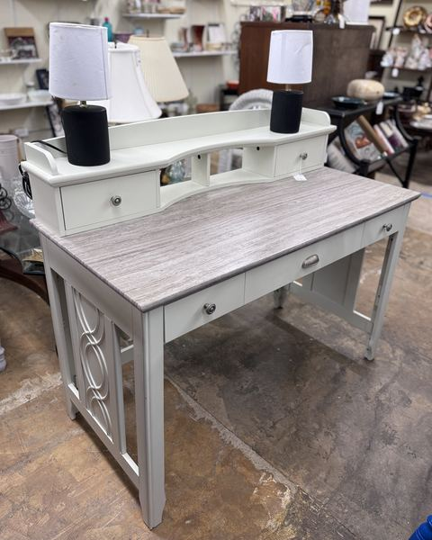
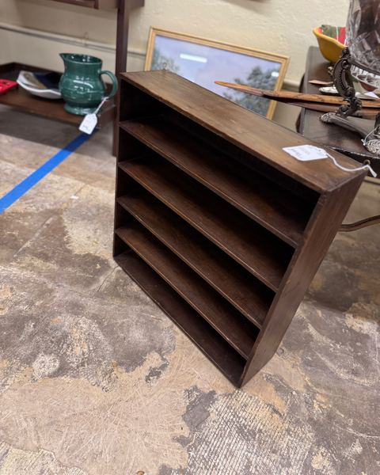

It happens at a lot of Lowcountry tables between Thanksgiving and New Year's. The family comes home, and someone notices the stairs are getting harder for Dad, the yard has gotten away from Mom, or the house that once held a family of six now holds two people and forty years of furniture. The conversation nobody wants to start finally starts.
If your family is talking about helping aging parents downsize, you're not alone — and you don't have to figure it all out over one holiday weekend. Here's a practical, respectful approach, written for families in Holly Hill, Orangeburg, Santee, Eutawville, St. George, Moncks Corner, Summerville, and across the SC Lowcountry.
Why the Holidays Bring It Up
- Everyone is in the same room. Siblings who live out of state are home and can actually see the house.
- You notice changes. Seeing parents after a few months apart makes small changes obvious.
- A new year feels like a fresh start. January is a natural time to make a plan.
- Spring moves need fall planning. If a move to a smaller home, a relative's house, or a senior community is coming in spring, now is when to start.
How to Start the Conversation
- Lead with their goals. Ask what they want the next few years to look like before talking about the house.
- Pick a quiet moment. Not in the middle of the holiday dinner. A walk or a cup of coffee the next morning works better.
- Get siblings on the same page first. Parents shouldn't feel ambushed by a united front — but the family should agree on the basics.
- Keep it a conversation, not a decision. You're starting a plan, not signing a contract on Christmas Eve.
- Acknowledge the memories. These aren't just things. Let them tell the stories behind the pieces.
A Practical Downsizing Plan
1. Start With the Floor Plan of the Next Home
If you know where your parents are going, measure it. A smaller home with one bedroom and a den can only hold so much. Deciding what fits first makes every other decision easier.
2. Sort Into Four Groups
The Four Piles
- Keep — what goes to the new home.
- Family — heirlooms and pieces children or grandchildren want. Tag them and set a deadline for pickup.
- Sell — quality furniture, silver, jewelry, collectibles, records, and decor with resale value.
- Donate or discard — everything else.

3. Go Room by Room, Not All at Once
Start with the spaces used least — the attic, the spare bedroom, the formal dining room — and leave the everyday rooms for last. Short sessions beat marathon weekends for everyone's patience.
4. Be Realistic About Value
Some things are worth more than you expect (sterling silver, gold jewelry, quality solid wood furniture, vinyl record collections, true antiques). Others, sadly, are worth less than their sentimental value. An honest outside evaluation takes a lot of the emotion out of pricing.
What to Do With the Furniture and Belongings
This is where most families get stuck. You have a few good options, and many families use more than one:
Estate Buyout — Fastest
We evaluate the contents and make a cash offer for everything we can take, from one piece to the contents of the entire home. It's the simplest path when the house is selling or family members live far away.


Consignment — Best for High-Value Pieces
For fine furniture, antiques, and collectibles when there's no rush, consigning through our 4,000 sq ft Holly Hill showroom often brings a better return. Consignors earn 40% when items sell. See how consignment works.
Managed Estate Sale — Best for a Full House
When there's a whole household of quality contents, a managed estate sale can move a lot in a short time. Learn about our estate sale services, and compare your options in our guide to Lowcountry estate sales and clearouts.
Taking Care of Mom and Dad Through the Process
- Let them choose first. Their favorite chair and their best dishes should go to the new home if they want them.
- Photograph what goes. A photo book of the old house and its treasures is a meaningful gift for the next holiday.
- Pass on the stories. Write down where heirlooms came from before they move to the next generation.
- Keep the pace gentle. Downsizing is a big emotional step. Progress matters more than speed.
We're Here When Your Family Is Ready
Room Swap Consignments has helped families across Orangeburg, Calhoun, Dorchester, Berkeley, and Clarendon counties through downsizing and estate transitions. You don't need to have everything sorted before you call — just send a few photos of the main furniture and anything that looks valuable to roomswapsc@gmail.com or text 843-900-1412. We'll give you an honest assessment and recommend the approach that fits your family's timeline.
The holidays are a good time to start the conversation. We can help with the rest.
Frequently Asked Questions
How do I start helping my parents downsize?
Start with their goals for the next few years, agree on the basics with siblings, measure the next home, and sort belongings into keep, family, sell, and donate groups — one room at a time.
What should we do with our parents' furniture when they downsize?
Quality furniture, silver, jewelry, collectibles, and records can be sold through an estate buyout, consignment, or a managed estate sale. Room Swap Consignments offers all three across the SC Lowcountry.
Does Room Swap buy the contents of a whole house?
Yes. We can buy one piece or the entire contents of an estate. Contact us at 843-900-1412 to discuss larger purchases and pickup arrangements.
What areas do you serve for downsizing and estate help?
We're based in Holly Hill and regularly work with families in Orangeburg, Calhoun, Dorchester, Berkeley, and Clarendon counties, including Orangeburg, Santee, St. George, Moncks Corner, and Summerville.